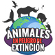

Top 5: animales en peligro de extinción
Ver artículo

Animales en peligro de extinción en México
No sabemos nada realmente del amor si no queremos a los animales
El Canis lupus baileyi es una especie de la cual se calcula que sobreviven menos de trescientos ejemplares. Su tamaño, más pequeño que el de cualquier otro lobo, puede compararse al de un perro mediano. Habitaba en México y en ciertas zonas de Norteamérica, pero actualmente solo existe en cautiverio. Su mayor amenaza fue el ser humano, pues los ganaderos de las zonas de las cuales era oriundo se encargaron de prácticamente exterminarlo.